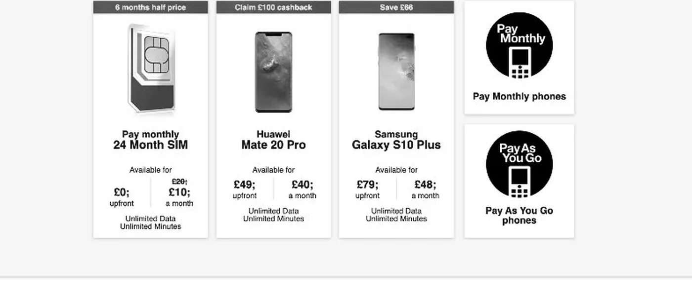
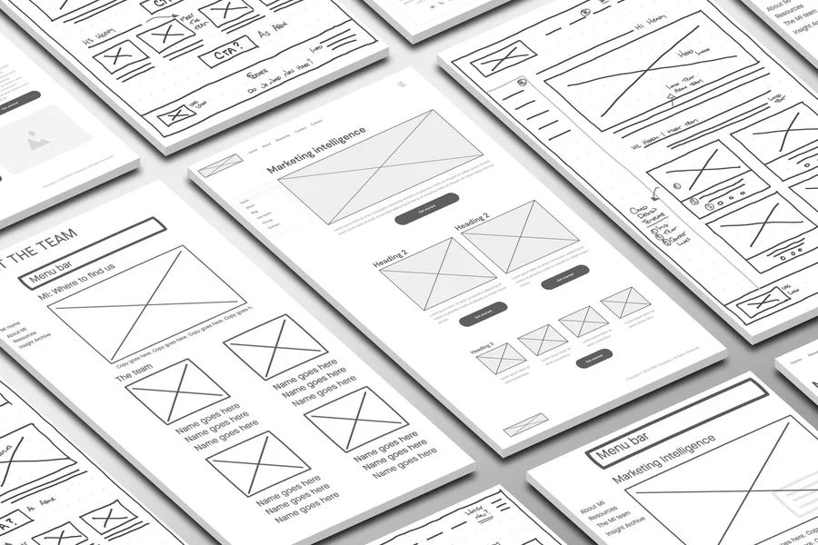
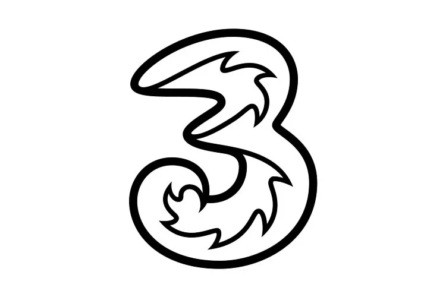
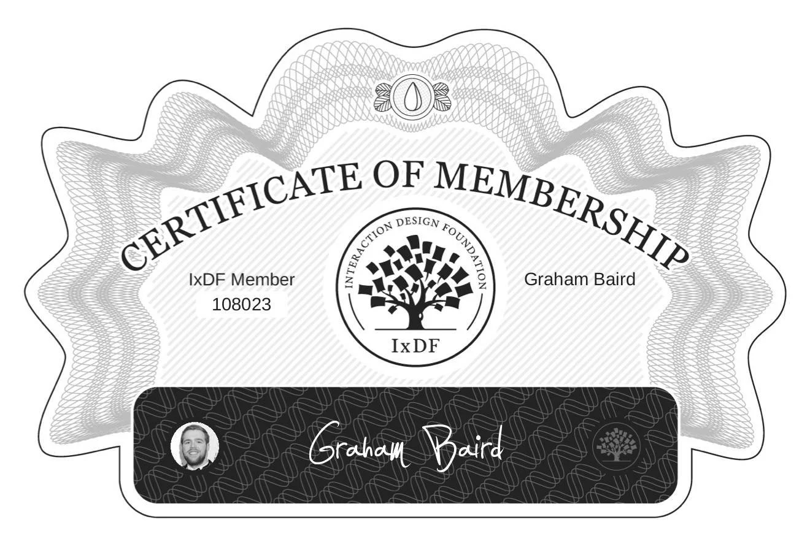
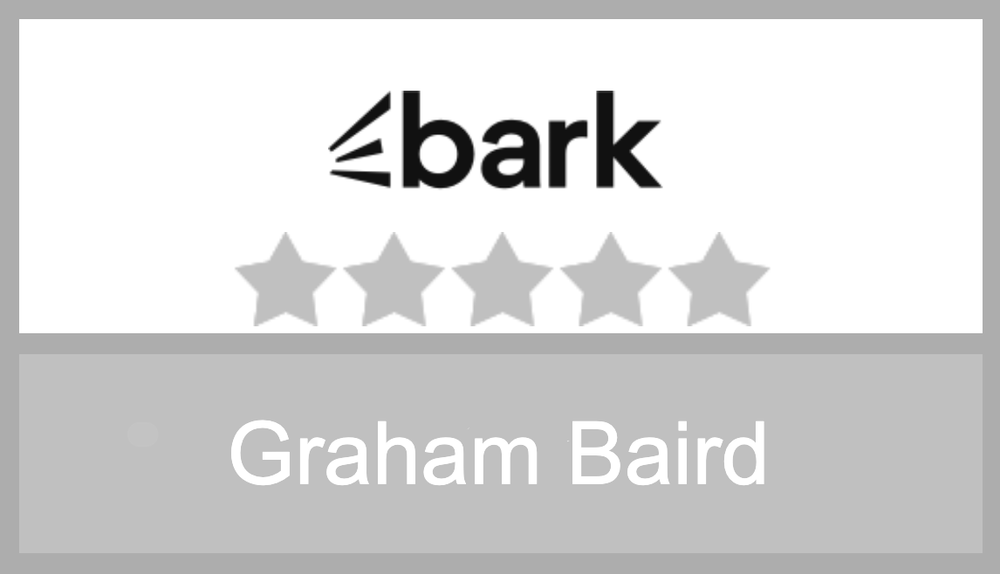

Problems solved meticulously
I'm unable to showcase my government work publicly due to strict confidentiality rules. If you want to view this work, get in touch.

Website design for an international telecommunications organisation
Overseeing the UX design and daily management of the UK website for Three Mobile across 12 months. Included ensuring the website was current and functional at all times.
View case study →
Wireframe and design for the world's 4th-oldest university
Researching, scoping, planning and designing a new website for the internal marketing intelligence team operating within the University of Glasgow.
View case study →Design a series of articles for a renowned global hotel group
Research, write and design articles to be published across the group websites promoting hotels in locations including the USA and Scotland.
View case study →Tried, tested and trusted

Keep it informed, keep it simple
Understand the problem
The process starts with data and research. Both of which form the insights used to make informed design decisions to set us up for success.
Learn by prototyping
Create low-fidelity designs early, iterate quickly, and reap the rewards in the long term. Prototypes answer the remaining questions.
Designing holistically
From analysing insights and defining user flows and journeys to considering edge cases, I design with the entire ecosystem in mind.
Expectation meets precision
Through constant communication and close collaboration, there are no surprises at the end of the process – just what you've asked for.
Delivery of work
The handover of work, along with all project materials, is prepared to ensure a seamless transition and successful project completion.
Hi, I'm Graham...
I'm a freelance, multidisciplinary, user-centred designer specialising in:
- UX design
- Service design
- Content design
- and more...
With 15 years of experience working on complex, high-stakes digital products spanning the complete design lifecycle, I have worked across the public and private sectors.
My expertise is in designing accessible, user-led services that meet people's needs and help them achieve their goals.
I have a comprehensive skill set that is wide-ranging and includes:
- creating user-centred, end-to-end services for online and offline platforms
- designing easy-to-read content in plain English that is understandable for all user groups
- identifying, establishing and designing user flows, service maps and blueprints
- developing user experiences enabling people to use products and services successfully
- expertise in understanding complex services
- creating prototype products to test with users
Design philosophy
As a designer, I want to understand the intricacies of how things work, take this knowledge and turn it into a user-led solution. While also demonstrating the pragmatism that ensures the solutions meet business requirements. These aspects are of equal importance to me in designing services.
Let's get started
Available to start on new freelance and contract work immediately. Open to remote and on-site work.
Based in the United Kingdom.
Interested in working together?
Book an introductory call or send me an email, and we can have a chat.

